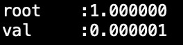
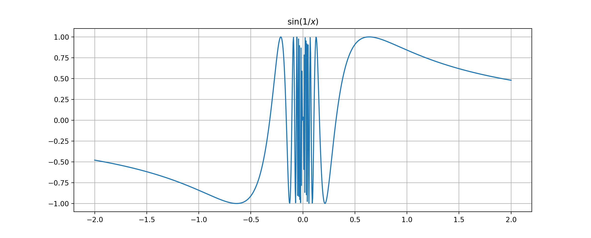

标签（空格分隔）： 連續 一致連續 初等函數
定義1.1 設函數\(f\)在\(U(x_0)\)上有定義，若
\[\lim_{x \to x_0} f(x) = f(x_0)\tag{1.1}\]
則稱函數\(f\)在\(x_0\)點連續。
定義1.2 函數\(f: E\to\mathbb{R}\)為\(E\)上的連續函數，如果函數在\(E\)上的每一點連續。
例子1.1 如果\(f(x)\equiv C, x \in E\),則\(f(x)\)在E上連續。
例子1.2 函數\(f(x)=x\)在\(\mathbb{R}\)上連續。
例子1.3 函數\(f(x)=\sin x, f(x) = \cos x\)在\(\mathbb{R}\)上連續。
例子1.4 函數\(f(x)=a^x\)在\(\mathbb{R}\)上連續。
例子1.5 函數\(f(x)=\log_a x\)在\(\mathbb{R}\)上連續。
定義1.3 若函數\(f(x), x\in E\)在\(x_0 \in E\)點不連續，則稱\(x_0\)為函數 \(f(x)\)的一個間斷點。
例子1.6 函數\(f(x)=\mathrm{sgn}(x)\)在\(x_0=0\)點間斷。
定義1.3 設\(x_0 \in E\)為函數\(f(x):E \to \mathbb{R}\)的一個間斷點， 若存在一個連續函數\(\tilde{f}:E\to \mathbb{R}\)使得：\(f\lvert_{E\setminus a} = \tilde{f}\lvert_{E\setminus a}\). 則稱\(x_0\)為函數\(f(x)\)的可去間斷點。
* 如果\(x_0\)為函數\(f(x)\)的可去間斷點，則有\(\displaystyle \lim_{x \to x_0}f(x)=A\)存在，但是\(A\ne f(x_0)\).
例子1.7 討論函數
\[f(x) = \left\{\begin{array}{cc} \sin \frac{1}{x}, & x \ne 0, \newline 0, & x = 0 \end{array}\right.\]
在\(x = 0\)點的連續性。
定義1.4 若函數\(f(x)\)在\(x_0\)點有：\(\displaystyle \lim_{x \to x_0^+}f(x)=A \ne \lim_{x \to x_0^-}f(x)=B\)，則稱\(x_0\)為函數\(f(x)\)的跳躍間斷點。
例子1.8 討論函數\(y = \lfloor x \rfloor\)的間斷點及其類型。
定義1.5 可去間斷點和跳躍間斷點統稱為第一類間斷點， 不是第一類間斷點的間斷點稱為第二類間斷點。
例子1.9 討論函數\(\displaystyle f(x) = \sin \frac{1}{x}\)的間斷點及其類型。
例子1.10 討論Dirichlet函數
\[\mathcal{D}(x) = \left\{\begin{array}{cc}1, & x \in \mathbb{Q} \newline
0, &x \in \mathbb{R}\setminus \mathbb{Q}\end{array}\right.\]的間斷點及其類型。
例子1.11 討論Riemann函數
\[\mathcal{R}(x) = \left\{\begin{array}{cc}\frac{1}{n}, & x=\frac{m}{n} \in \mathbb{Q} \newline
0, &x \in \mathbb{R}\setminus \mathbb{Q}\end{array}\right.\]的間斷點及其類型。
1. 按照定義證明下列函數在其定義域上連續：
(1). \(\displaystyle f(x) = \frac{1}{x}\)
(2). \(f(x) = |x|\)
2. 指出下列函數的間斷點並說明其類型：
(1). \(\displaystyle f(x) = x + \frac{1}{x}\)
(2). \(\displaystyle f(x) = \frac{\sin x}{|x|}\)
(3). \(\displaystyle f(x) = \lfloor |\cos x|\rfloor\)
(4). \(\displaystyle f(x) = \mathrm{sgn}|x|\)
(5). \(\displaystyle f(x) = \mathrm{sgn}(\cos x)\)
(6). \(\displaystyle f(x) = \left\{\begin{array}{cc}x, & x \in \mathbb{Q} \newline
-x, &x \in \mathbb{R}\setminus \mathbb{Q}\end{array}\right.\)
3. 延托下列函數，使其在\(\mathbb{R}\)上連續：
(1). \(\displaystyle f(x) = \frac{x^3-8}{x-2}\)
(2). \(\displaystyle f(x) = \frac{1-\cos x}{x^2}\)
(3). \(\displaystyle f(x) = x\cos \frac{1}{x}\)
定理2.1 設\(f: E \to \mathbb{R}\)在\(x_0 \in E\)點連續，則下列結論成立：
(1). 函數\(f: E \to \mathbb{R}\)在\(x_0\)的某鄰域\(U_{\delta}(x_0)\)上有界。
(2). 如果\(f(x_0) \ne 0\)，則存在\(x_0\)的某鄰域\(U_{\delta}(x_0)\)，對於\(\forall x \in U_{\delta}(x_0)\)，有\(f(x)\)與\(f(x_0)\)同號。
(3). 如果函數\(g: U_E(x_)) \to \mathbb{R}\)定義在\(x_0\)的某鄰域上，且在\(x_0\)點連續，則下列函數在\(x_0\)點連續：a) \((f+g)(x) = f(x) + g(x)\)
b) \((f \cdot g)(x) = f(x) \cdot g(x)\)
c) \(\left(\frac{f}{g}\right)(x) = \frac{f(x)}{g(x)}(g(x_0)\ne 0)\)(4). 如果函數\(g: Y \to \mathbb{R}\)在\(b \in Y\)點連續，且\(f\)滿足：\(f: E \to Y, f(x_0) = b\)，\(f\)在\(x_0\)點連續，則復合函數\(g \circ f\)在\(x_0\)點連續。
Example 2.1 求\(\displaystyle \lim_{x \to 1}\sin (1-x^2)\)
example 2.2 求極限：(1) \(\displaystyle \lim_{x \to 0}\sqrt{2 - \frac{\sin x}{x}}\); (2) \(\displaystyle \lim_{x \to \infty}\sqrt{2 - \frac{\sin x}{x}}\)
Example 2.3 An algebraic polynomail \(P(x) = a_0 x^n + a_1 x^{n-1} + \cdots + a_n\) is a continuous function on \(\mathbb{R}\).
Example 2.4 A rational function \(\displaystyle R(x) = \frac{P(x)}{Q(x)}\)(a quotient polynomial) is continuous wherever it is defined, that is, \(Q(x)\ne 0\).
Theorem2 (The Bolzano-Cauchy intermediate-value theorem)
If a function that is continuous on a closed interval assumes values with different signs at the endpoints of the interval, then there is a point in the interval where it assume the value 0In logical symbols, this theorem has the following expression.
\[f \in C[a,b] \wedge f(a)\cdot f(b) < 0 \Rightarrow \exists c \in [a,b], f© = 0.\]
Remarks to Theorem2
Remarks 1 The proof of the theorem provides a very simple algorithm for find a root of the equation \(f(x)=0\) on an interval at whose endpoints a continuous function \(f(x)\) has values with opposite signs.
# bisection method for zeros finding
#!/usr/bin/env python
# -*- coding: UTF-8 -*-
class ZeroFinding(object):
def __init__(self, fun):
'''
fun: the input function.
root: the roots of the input function.
val: the function value at the root.
'''
self.fun = fun
self.root = 0.0
self.val = 0.0
def __str__(self):
'''
print the root and val
'''
return 'root\t:%f\nval\t:%f\n' % (self.root, self.val)
def bisection(self, a, b):
import os, sys
import numpy as np
'''
bisection method for zeros finding
'''
EPSILON = 0.000001
if self.fun(a)*self.fun(b) > 0:
print('The values at the end points assume not opposite signs')
sys.exit(1)
while abs(b-a)>EPSILON:
c = (a + b) / 2.0
if abs(self.fun(c)) < EPSILON:
self.root = c
self.val = self.fun(c)
return
elif self.fun(c)*self.fun(a) > 0:
a = c
else:
b = c
self.root = c
self.val = self.fun(c)
def f(x):
'''
define a test function
'''
return x*x*x-1.0
if __name__ == '__main__':
obj = ZeroFinding(f)
obj.bisection(-1.0, 2.0)
print(obj)The zeros of the function: \(f(x) = x^3 - 1\) is:

Remark2 The theorem asserts that it is impossible to pass continuously from positive to negative values without assuming the value zero along the way.
Corollary to Theorem 2 If the function \(\phi\) is continuous on an open interval and assumes values \(\phi(a) = A, \phi(b) = B\) at points \(a, b\), then for any number \(C\) between \(A\) and \(B\), there is a point \(\xi\) between \(a, b\) at which \(\phi(\xi) = C\).
Theorem 3(The Weierstrass maximum-value theorem) A function that is continuous on a closed interval is bounded on that interval. Moreover there is a point in the interval where the function assume its maximum vale and a point where it assumes its minimal value.
Definition1 A function \(f: E \to \mathbb{R}\) is uniformly continuous on a set \(E \subset \mathbb{R}\) if for every \(\epsilon > 0\) there exist a \(\delta > 0\) such that \(|f(x_1) - f(x_2)| < \epsilon\) for all points \(x_1, x_2 \in E\) such that \(|x_1 - x_2|<\delta\).
logicial language: \(f:E \to \mathbb{R}\) is uniformly continuous := \[\forall \epsilon >0, \exists \delta>0, \forall x_1, x_2 \in E, |x_1 - x_2|<\epsilon \Rightarrow |f(x_1) - f(x_2)| < \epsilon.\]
Remark 1 Generally speaking, uniformly continuity implies pointwise continuity, pointwise continuity doesn’t implies uniformly continuity.
Example2.4 The function \(\displaystyle f(x) = \sin\left(\frac{1}{x}\right)\) is continuous at the open interval \((0,1)\). However, at each neighborhood of 0, the function assumes both \(1, -1\), so the function is not uniformly continuous at the interval \((0,1).\)

It is useful to write out explictly the negation of property of uniform continuity for a function.
\(\displaystyle f: E \to \mathbb{R}\) is not uniformly continuous on \(E\) if and only if
\[ \exists \epsilon_0>0, \forall \delta>0, \exists x_1, x_2 \in E, |x_1 - x_2| < \delta, |f(x_1) - f(x_2)| \ge \epsilon_0\]
Example 2.5 If \(f: E \to \mathbb{R}\) is unbounded on every neighborhood of a fixed point \(x_0 \in E\), then \(f\) is not uniformly continuous on \(E\).
Example 2.6 The function \(f(x) = x^2\) is continuous on \(\mathbb{R}\) but not uniformly continuous on \(\mathbb{R}\).
Example 2.7 The function \(f(x) = \sin(x^2)\) is continous on \(\mathbb{R}\) but not uniformly continuous on it.
Theorem 4(The Cantor-Heine theorem on uniform continuity) A function that is continuous on a closed interval is uniformly continuous on that interval.
Proposition 1 A continuous mapping \(f: E \to \mathbb{R}\) of a closed interval \(E=[a,b]\) into \(\mathbb{R}\) is injective if and only if \(f\) is strictly monotonic on \([a,b].\)
Proposition 2 Each strictly monotonic function \(f: X \to \mathbb{R}\) defined on a numerical set \(X \subset \mathbb{R}\) has an inverse \(f^{-1}: Y \to \mathbb{R}\) defined on the set \(Y = f(X)\) of values \(f\), and has the same kind of monotonicity on \(Y\) that \(f\) has on \(X\).
Proposition 3 The discontinuities of a function \(f: E \to \mathbb{R}\) that is monotonic on the set \(E \subset \mathbb{R}\) can be only discontinuities of fist kind.
Corollary 1 If a is a point of discontinuity of a monotonic function \(f: E \to \mathbb{R}\), then at least one of the limits:
\[\lim_{x \to a^+}f(x) = f(a+0), \lim_{x \to a^-}f(x) = f(a-0)\] exists.Corollary 2 The set of points of discontinuities of a monotonic function is at most countable.
Proposition 4(A criterion for continuity of a monotonic function) A monotonic function \(f: E \to \mathbb{R}\) defined on a closed interval \(E=[a,b]\) is continuous if and only if its set of values \(f(E)\) is the closed interval with endpoints \(f(a)\) and \(f(b)\).
Theorem 5(The inverse function theorem) A function \(f: X \to \mathbb{R}\) that is strictly monotonic on a set \(X \subset \mathbb{R}\) has an inverse \(f^{-1}: Y \to \mathbb{R}\) of values \(f\). The function \(f^{-1}: Y \to \mathbb{R}\) is monotonic and has the same type of monotonicity on \(Y\) that \(f\) has on \(X\).
If in addition \(X\) is a closed interval \([a,b]\) and \(f\) is continuous on \(X\), then the set \(Y = f(X)\) is the closed interval with endpoints \(f(a)\) and \(f(b)\) and the function \(f^{-1}: Y \to \mathbb{R}\) is continuous on it.
1. 設\(f, g\)在區間\(I\)上連續，記
\[F(x) = \max\left\{f(x), g(x)\right\}, G(x) = \min\left\{f(x),g(x)\right\}.\]
證明\(F,G\)在區間\(I\)上連續。
2. 設\(f\)為\(\mathbb{R}\)上的連續函數，常數\(c>0\),記
\[F(x) = \left\{\begin{array}{cc} -c, & 若f(x)<-c \newline
f(x)，& 若|f(x)|\le c \newline
c, & 若f(x)>c \end{array}\right.\]
證明\(F(x)\)在\(\mathbb{R}\)上連續。
3.若對於任何充分小的\(\epsilon > 0\), \(f\)在\([a+\epsilon, b-\epsilon]\)上連續，能否推出\(f\)在\((a, b)\)內連續？
4.求極限
(1) \(\displaystyle \lim_{x \to \frac{\pi}{4}}(\pi - x)\tan x\);
(2) \(\displaystyle \lim_{x \to 1^+}\frac{x\sqrt{1+2x}-\sqrt{x^2 - 1}}{x+1}\)
5. 證明：任何一個實係數奇次方程至少有一個實根。
6. 試用一致連續的定義證明：若\(f,g\)在區間\(I\)上一致連續，則\(f+g\)也在\(I\)上一致連續。
7. 證明：\(f(x) = x^2\)在\([a,b]\)上一致連續，但在\(\mathbb{R}\)上不一致連續。
Author: wuguoning
email: wuguoning@163.com
2018-11-08